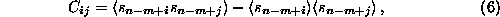

In both applications the mathematics is the same: One constructs the
covariance matrix of all data vectors (e.g. in an m-dimensional
time delay embedding space),

and computes its singular vectors. Then one projects onto the
m-dimensional vectors
corresponding to the q largest singular values. To work with flow data, q
should be at least the correct embedding dimension, and m considerably
larger (e.g. m=2q or larger). The result is a vector valued time series, and
in [22] the relation of these components to temporal derivatives on
the one hand and to Fourier components on the other hand were discussed. If,
in the non-autonomous case, one wants to compress flow data to map data,
q=1. In this case, the redundancy of the flow is implicitly used for noise
reduction of the map data. The routine pca can be used for both purposes.